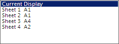
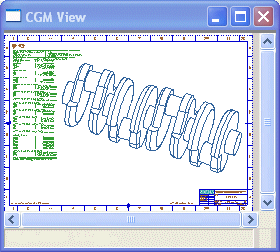

开始构建绘图文件
-
选择文件→绘图。
绘图对话框出现。
在源组中，有四个图纸页，各个图纸页的大小显示在它的名称之后。

可以使用这个列表来选择将要绘制的图纸页。
要获取更多关于该对话框的信息，参见链接：
在颜色和宽度组中的选项让您可以控制使用在绘图中的颜色和线宽。
-
在颜色和宽度组的颜色列表中，选择部件颜色。
即使在图形窗口中是以单色显示，您仍然可以使用彩色绘图。
-
在操作组中，点击高级绘图。

SDI 打印控制-提交对话框出现。
-
在对话框的右下角，点击 CGM 观察器。
您可能需要在屏幕左上角找到观察器，同时，如果需要，在 CGM 观察窗口中右击并选择放大以查看图纸。
观察器为您显示即将绘制的对象。

-
关闭 CGM 观察窗口。
-
在SDI 打印控制-提交对话框中，点击取消。